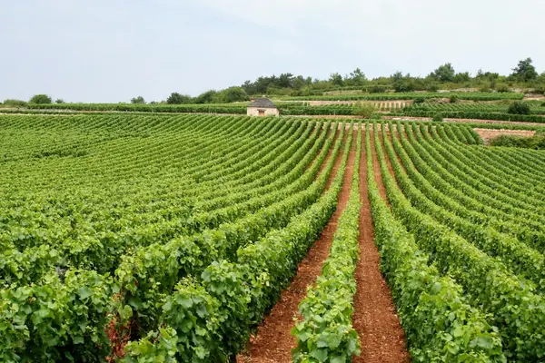

Home › Wine regions › Provence
Provence wine region

Photo: Gwyn Hay on Unsplash
Pale, dry rosé.
The benchmark for many wine styles, organized by appellation (AOC).
Notable producers in Provence
- Domaine Tempier
- Château d'Esclans
- Château Minuty
- Domaines Ott
- Château Simone
Official appellations
| Appellation | Status | Style | Grapes |
|---|---|---|---|
| Bandol (1941) Coastal appellation of 8 communes around the port of Bandol. Reds need at least 50% Mourvèdre and 18 months in oak; rosés at least 20% Mourvèdre. | AOC | Red, Rosé, White | Mourvèdre, Garnacha / Grenache, Cinsault |
Provence wines to try
Château d'Esclans Whispering Angel
Provence · Côtes de Provence · Grenache Rosé, Cinsault
Pale and dry: strawberry, peach and a crisp finish.
Food: Salads, grilled prawns
More wine regions in France
Support The Wine Reference
This guide is free, with no paywall. If it helped you choose a bottle, you can buy me a glass and keep it growing.
🍷 Buy me a glass